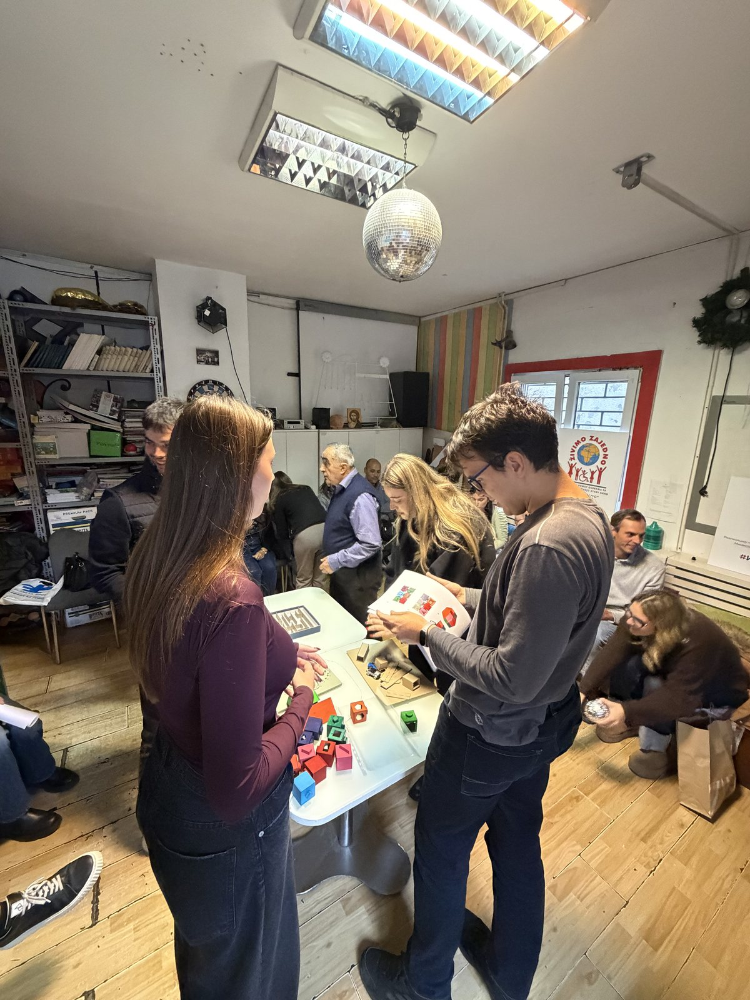
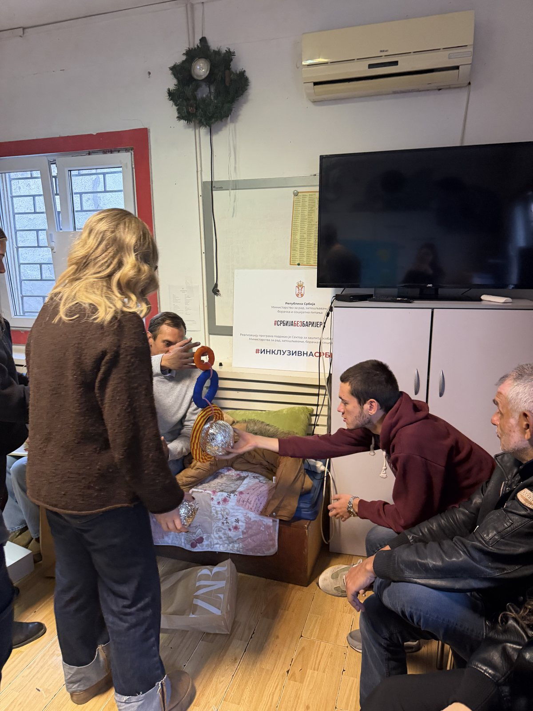
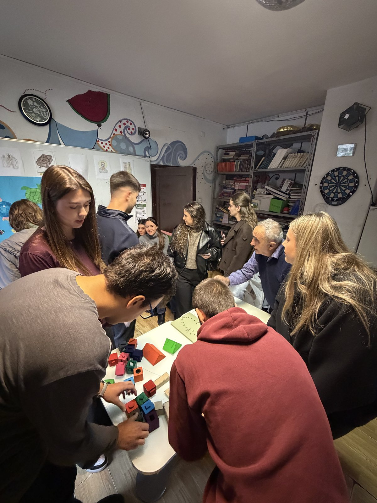
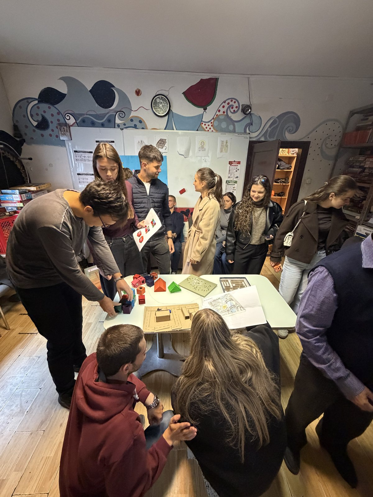

1 kadar · Nedelja 5 · stranica rada ↗
Bez naziva

Principi univerzalnog dizajna Univerzitet „Union — Nikola Tesla”, Beograd · Fakultet za graditeljski menadžment 2026/2027 · prvi (zimski) semestar · treća godina
Nedelja 5 · Udruženje „Živimo zajedno”, Beograd ·
Treća poseta udruženju sa prototipima, u petak 30.10.2026, istog dana kad je održan peti čas. Na spisku posete su trideset četiri studenta; devetnaest od njih ima rad zaveden na spisku petog časa, a petnaest dolazi bez rada zavedenog tog dana. Šest fotografija posete snimili su studenti; na dve je prepoznat rad sa spiska petog časa (tabla sa kanapom i tabla sa oblicima), a na jednoj i list sa tačkama čiji autor još nije zaveden. Analiza po radu piše se kad stignu i preostali kadrovi.
Šta kadar dokazuje, a šta ne: otisak dokazuje da fajl nije zamenjen; koji se rad na kadru vidi jeste ljudska tvrdnja, doneta gledanjem. Fotografija beleži položaj i hvat — nikad trajanje, samostalnost, razumevanje pravila ni uspešan ishod.
Rad po rad
2 rada prepoznato je na 6 kadrova. Svaki stoji sa svojim kadrovima, čitanjem i probom koju traži dalje.
1 kadar · Nedelja 5 · stranica rada ↗
1 kadar · Nedelja 5 · stranica rada ↗

Sam dan
Ostaju objavljeni: niz presečen samo tamo gde priči odgovara više nije dokaz.




Ko je bio tamo
Svako ime nosi svoj zapis u dnevniku, sa svim nedeljama u kojima se pojavljuje.
Izvor sadržaja: data/poseta-2026-10-30.json (registar posete) i data/prototipovi-javno.json (javni izvod registra radova). Bez JavaScript-a: ceo prilog je čitljiv sa pečene statike.